Suzuki Swift 1.0
Centrálzár
Benzin, 1997/06, 65LE, 239 3011 km

Ez a kompakt jármű kiváló választás mindennapi városi közlekedésre vagy hosszabb utakra. A Swift gazdaságos üzemeltetést kínál, és megbízható teljesítményt nyújt. A jármű jó állapotban van, szép külső és belső kialakítással rendelkezik. Ha egy kényelmes, stílusos és megbízható autót keresel, amely készen áll az új kalandokra, akkor ez a Suzuki Swift a neked való választás lehet!
350 000 Ft
Peugeot Boxer Bluehdi
Centrálzár
Benzin, 2013, 105 781 km
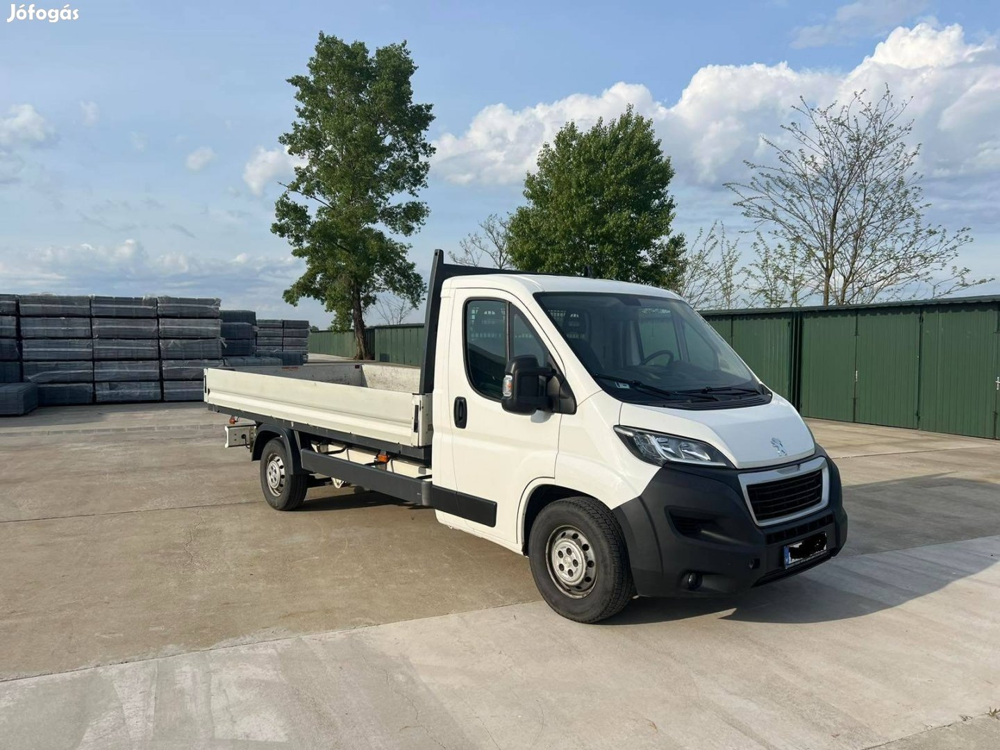
Eladó Peugeot Boxer Bluehdi 350 CHC L4 első tulajdonostól.
Jól felszerelt ! Tempomat, Bluetooth kihangosító, ködlámpa. Szérián felüli gyári felszereltség a + 3, 5 tonnás vonóhorog.
Folyamatosan szervizelt, jó esztétikai és műszaki állapotban, olaj cserék 15.000 km-ként.
Friss műszaki vizsga, 2024.09.29. -ig érvényes.
6 000 000 Ft
Volvo V40
Centrálzár
Dízel, 1999, 450 552
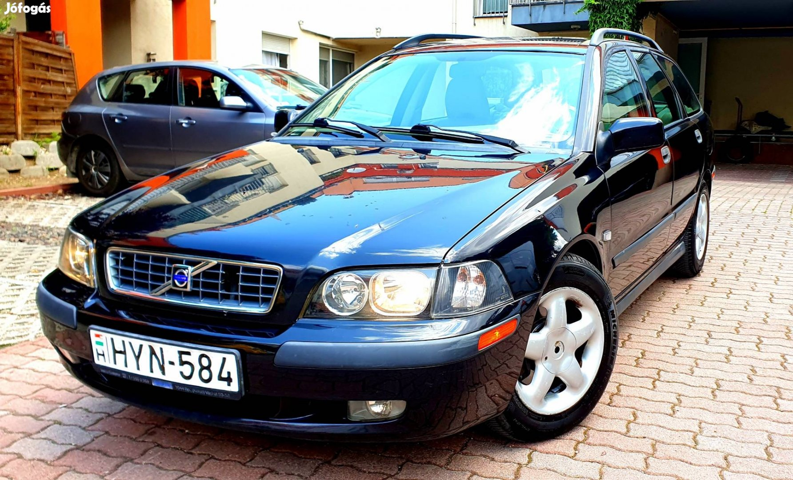
87.278 kuplung csere, alsógömbfejek, kormánymű porvédő, kormánymű gumiharang. 120.000.km vvt agy, csere szimering, hátsó fékbetétek, gyújtógyergya cserélve! Teljesen Költségmentes Állapotban, Rendezett Papírokkal Eladó egy kézi váltós, Full Extrás Volvo V40, 2.0 benzines, kiváló újszerű motorral, tulajdonosától.
990 000 Ft
Fiat Panda 1.1
Centrálzár
Benzin, 2005, 300 321 km
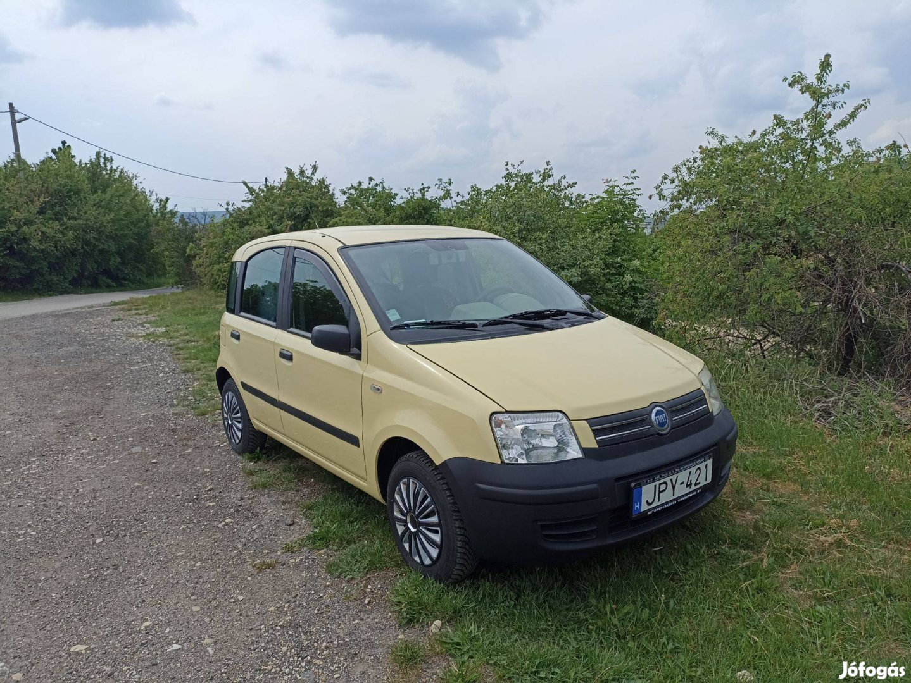
Eladásra kínálom szeretett kisautómat. Jó műszaki állapotú, városi közlekedésre méretéből adódóan kiválóan alkalmas, de a vidéki kiruccanásokat is jól bírja. Alacsony fogyasztású és fürge, kényelmes és praktikus. Továbbá egy teljes téli/ nyári gumiszettet adok mellé (jelenleg a télit viseli). A bal oldal fényezését a nap kissé kiszívta (mi már így vettük), bal hátsó sárhányón kis rozsdafolt található.
800 000 Ft
Volkswagen Passat
Centrálzár
Dízel, 2005, 65LE, 148 111 km
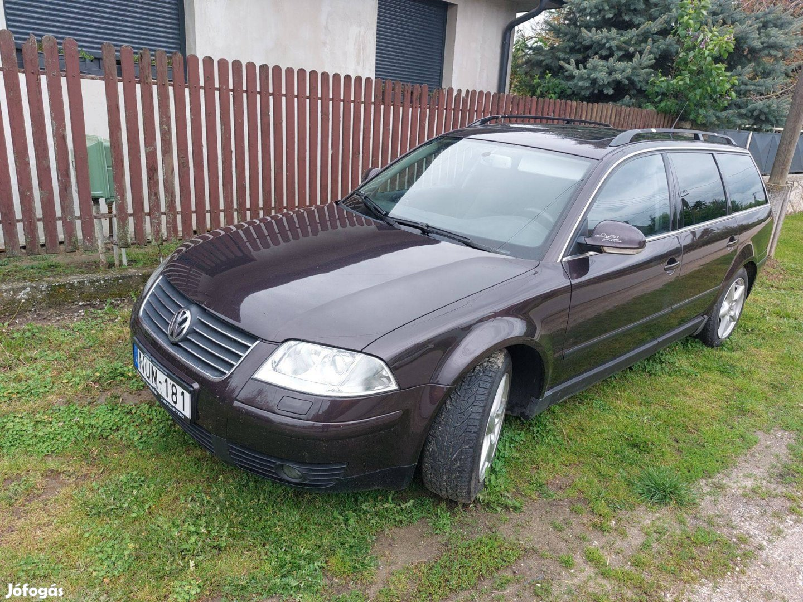
Eladó megkimélt családi autónk kihasználatlanság végett. Bővűlt a család és nagyobb kell. Rendszeresen karban tartott friss olajcsere szűrőkkel uj fékrendszer csere felújított turbó, üzemanyag szivattyú csere üzemképes állapot. Kisebb esztétikai hibái vannak korának megfelelő helyeken. Fényezése sérűlés és korrózió mentes egyedi szinnel rendelkezik nem minden nap jön szembe egy ilyen autó.
1 452 000 Ft
Ford Focus 1.0
Centrálzár
Benzin, 2014, 126LE, 89 000 km
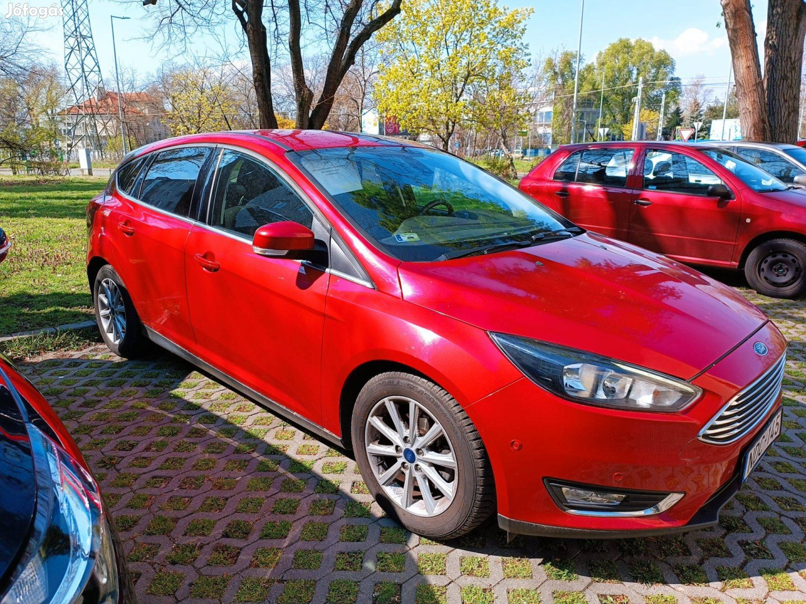
Ford focus 1.0 126Le, titánium felszereltség+ülés fűtés, fűtőszálas szélvédő, sötétített ablak, légkondi.
Friss műszaki vizsga(2025.04) új akkumulátor, jó állapotú négyévszakos gumik.Dohányzás és sérülés mentes
Márkaszervízben szervizelt, vezetett szervíz könyv.
4 350 000 Ft
Ford Transit Tourneo Custom 2.0
Centrálzár
Dízel, 2017, 50000 km
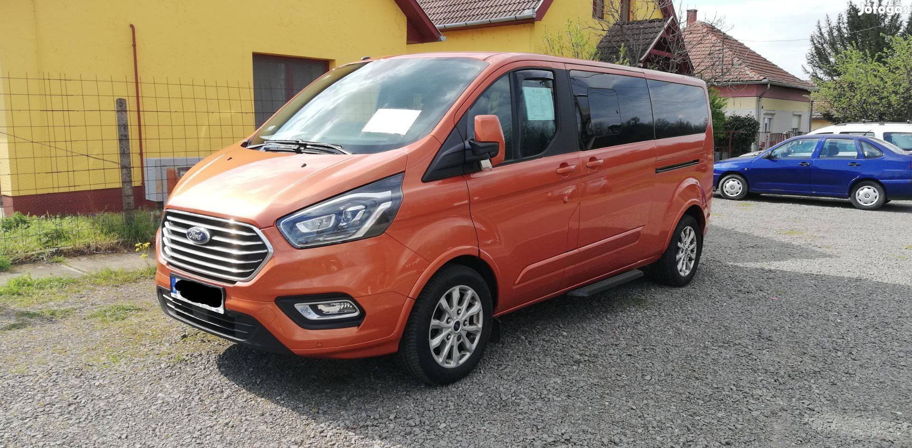
Eladom a Ford buszomat, mert egy új, ugyanilyen modellt vásárolok. Német állampolgár vagyok, és természetesen beszélek németül, de magyarul is. Mint látható, az autó Magyarországon van bejegyezve és ott is van.
Az autót szinte kizárólag autópályán, Németország és Magyarország között vezettem. Rendszeres karbantartáson és szervizelésen esett át. Ezen kívül az első féktárcsák/betétek most lettek felújítva. A műszaki vizsgája 2024 áprilisáig érvényes, de közvetlenül az eladás előtt is megújítható.
9 900 000 Ft
Peugeot 5008 1.2 Puretech
Centrálzár
Benzin, 2023, 0 km
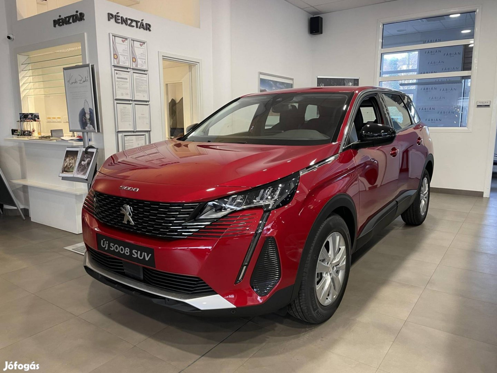
Eladó a képeken látható Peugeot 5008 Active Pack felszereltségű modell, Ultimate piros 3 rétegű metálfénnyel, gyerek csomaggal, ülésfűtéssel, pótkerék előkészítéssel, szerszám nélkül leszerelhető vonóhorog 13 pólusos csatlakozóval, vontatmánystabilizáló rendszerrel, Eelső és hátsó parkolóradar + tolatókamerával. Az Autó Készleten Van, Telephelyünkön Megtekinthető! Az autót a facelift előtti modell hátsó lámpáival szerelték.
13 350 000 Ft
Opel MOKKA 1.2 T
Centrálzár
Benzin, 2022, 12 420 km
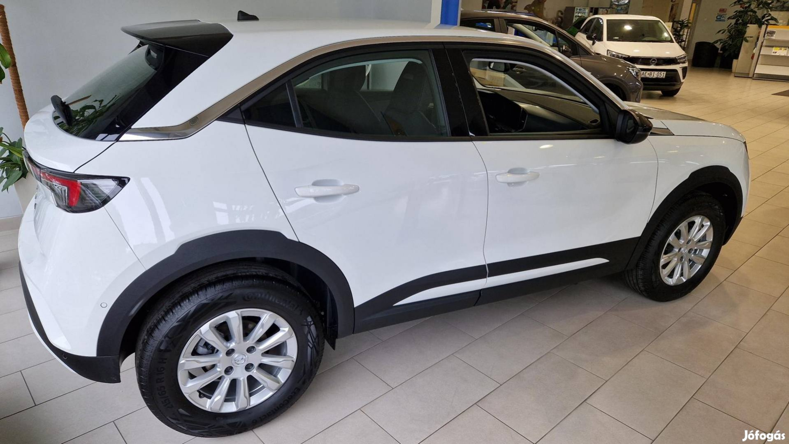
dvező finanszírozási ajánlatok, használt autóját nagyon jó áron beszámítjuk! Velünk biztosan jól jár! A legjobb Opel ajánlathoz várjuk személyesen! Nálunk garantáltan megtalálja az Ön Opeljét! Legalább 5 év garanciával minden Opel! Az akciós ár Opel finanszírozás igénybevétele esetén érvényes. Érdeklődjön az akció pontos feltételeiről. A fotó illusztráció! Wallis A hirdetések tájékoztató jellegűek, részletekért tájékozódjon márkakereskedésünkben.
10 000 000 Ft
BMW X5 xdrive45e
Centrálzár
Benzin, 2023, 0 km
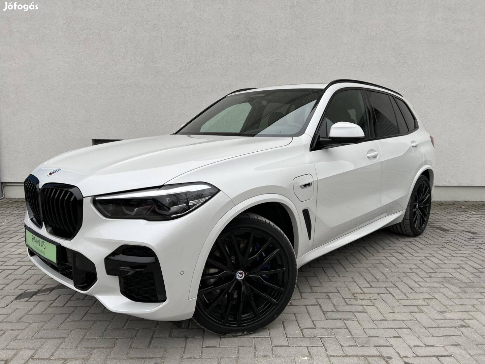
Felszereltség: ABS (blokkolásgátló) - ADS (adaptív lengéscsillapító) - állítható combtámasz - állítható felfüggesztés - állítható hátsó ülések - állítható kormány - Android Auto - Apple Carplay - ARD (automatikus távolságtartó) - ASR (kipörgésgátló) - Automata (8 fokozatú tiptronic) - automata fényszórókapcsolás - automata távfény - automatikusan sötétedő belső tükör - automatikusan sötétedő külső tükör - bekanyarodási segédfény - bluetooth-os kihangosító - bőr belső - bőrkormány - centrálzár - digitális műszeregység - Digitális többzónás klíma - elektromos ablak elöl - elektromos ablak hátul - elektromos csomagtérajtó-mozgatás - elektromos tükör - elektromos ülésállítás utasoldal - elektromos ülésállítás vezetőoldal - elektromosan állítható fejtámlák - elektromosan behajtható külső tükrök - elektronikus futómű hangolás - első-hátsó parkolóradar - érintőkijelző - esőszenzor - ESP (menetstabilizátor) - fedélzeti komputer - fékasszisztens - GPS (navigáció) - hangvezérlés - hátsó fejtámlák - HIFI - holttér-figyelő rendszer - HUD / Head-Up Display - indításgátló (immobiliser) - kanyarkövető fényszóró - kikapcsolható légzsák - kormányváltó - könnyűfém felni - középső kartámasz - kulcsnélküli indítás - kulcsnélküli nyitórendszer - LED fényszóró - memóriás vezetőülés - multifunkciós kormánykerék - oldallégzsák - parkolóasszisztens - radaros fékasszisztens - riasztó - sávtartó rendszer - sávváltó asszisztens - sebességfüggő szervókormány - sportfutómű - start-stop/motormegállító rendszer - szervokormány - színezett üveg - tábla-felismerő funkció - távolsági fényszóró asszisztens - távolságtartó tempomat - tempomat - tolatókamera - tolatóradar - tolótető (napfénytető) - USB csatlakozó - utasoldali légzsák - ülésmagasság állítás - ütközés veszélyre felkészítő rendszer - vészfék asszisztens - vezetőoldali légzsák - visszagurulás-gátló - vonóhorog - elektromosan kihajtható.
35 500 000 Ft
Peugeot 308 SW 1.6
Centrálzár
Benzin, 2023, 0 km
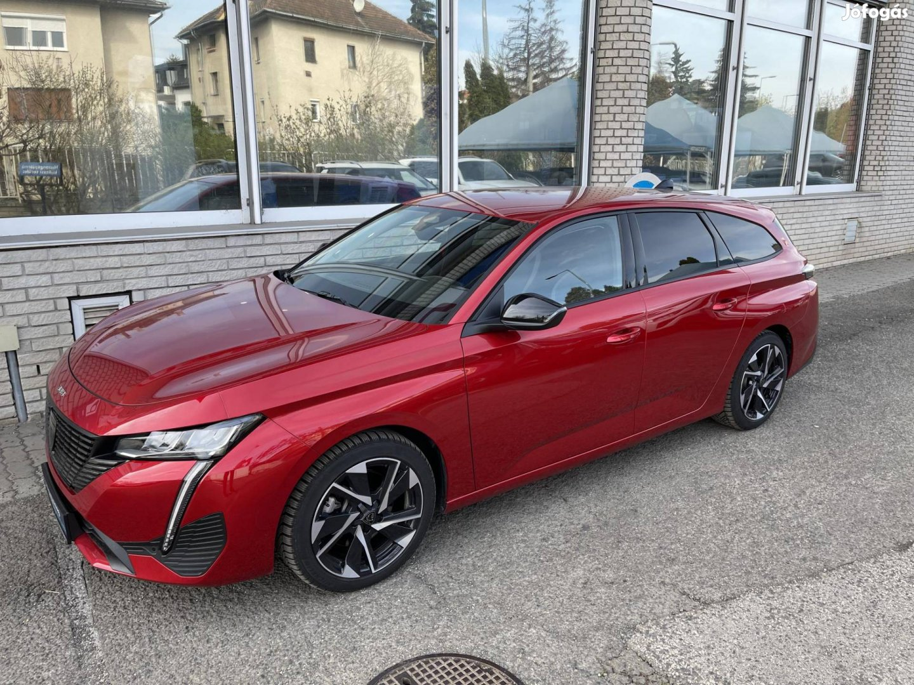
Tisztelt Érdeklődő! Központi készletről kínáljuk eladásra a hirdetett autót. Megrendelés előtt érdeklődjön az autó meglétéről, mivel országos szabad készleten van. GT felszereltséggel, 180LE-s Plugin Hibrid hajtáslánccal és az alábbi extrákkal: Alcantara kárpit + manuálisan állítható első ülések + vezető oldali deréktámasz, Elektromosan állítható AGR ülések + utasoldali deréktámasz+ fűthető ülések masszázsfunkcióval, Elixir piros színezett lakkfényezés, Első és hátsó parkolóradar + Visiopark 2 (360 fokos kamera) + parkolóasszisztens, Fűthető kormánykerék, Láblendítéssel nyitható motorizált csomagtér ajtó, Sávpozíció tartó asszisztens (automata váltóhoz), Vezeték nélküli telefontöltő (Qi szabvány).
17 350 000 Ft
Citroen C5 X 1.6
Centrálzár
Hibrid, 2023, 0 km
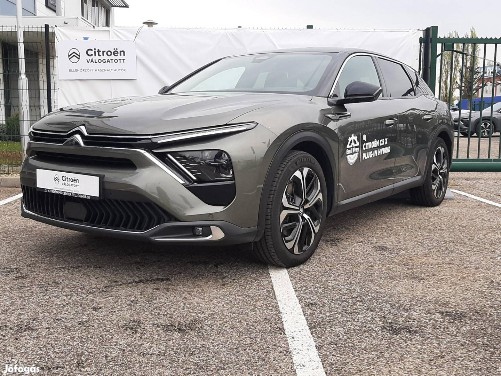
Felszereltség: ABS (blokkolásgátló) - ESP (menetstabilizátor) - ASR (kipörgésgátló) - utasoldali légzsák - oldallégzsák - tempomat - könnyűfém felni - 2 DIN - 360 fokos kamerarendszer - 8 hangszóró - állítható kormány - Android Auto - Apple Carplay - Automata (8 fokozatú tiptronic) - automatikusan sötétedő belső tükör - bekanyarodási segédfény - bluetooth-os kihangosító - bőr belső - bőrkormány - centrálzár - defektjavító készlet - deréktámasz - Digitális kétzónás klíma - digitális műszeregység - EDS (elektronikus differenciálzár) - elektromos ablak elöl - elektromos ablak hátul - elektromos csomagtérajtó-mozgatás - elektromos tükör - elektromos ülésállítás utasoldal - elektromos ülésállítás vezetőoldal - elektromosan behajtható külső tükrök.
19 000 000 Ft